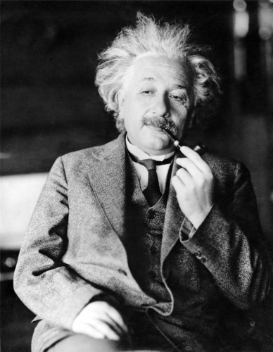

München
În 1880 familia lui s-a mutat la München, unde tatăl și bunicul lui și-au deschis un atelier de produse electrice.
În anul 1884, la vârsta de cinci ani, micul Albert a primit de la tatăl său o busolă care l-a fascinat, producându-i - cum avea să declare mai târziu - „o impresie adâncă și de durată", inspirându-i dorința de a cerceta misterele naturii, dorință care îl va urmări toată viața. La insistențele mamei, la 6 ani, Einstein a luat lecții de vioară și, deși nu era prea pasionat, interpreta cu plăcere lucrări ca „Sonata pentru vioară" a lui Mozart.
Între 1885 și 1888 Einstein a fost trimis la școala elementară catolică din München și, deși părinții săi nu erau religioși, ca o contrapondere, el a primit acasă și lecții de iudaism.
Dorind să-l îndrume către electrotehnică, tatăl său îl înscrie, în anul 1888, la gimnaziul Luitpold din München (astăzi, acest gimnaziu îi poartă numele).
Deși aici erau promovate ideile progresiste ale pedagogiei (era perioada conflictului dintre adepții învățământului clasic, în cadrul căruia se studiau greaca și latina, și cei ai învățământului modern, care avea la bază studiul limbilor moderne), Einstein ura disciplina, rutina și modelul militar pe baza căruia funcționau școlile în acea perioadă, unde profesorii impuneau elevilor respect și supunere absolută. Mai târziu, în scrierile sale, sublinia faptul că, aici, gândirea creatoare era eliminată prin învățarea bazată pe memorare mecanică și lipsită de imaginație.
Un prieten de familie, Max Talmud, student la medicină, îl inițiază pe micul Einstein la vârsta de 10 ani, în anul 1889, în domeniul cunoașterii, împrumutându-i cărțile sale științifice și filozofice și prezentându-i, printre altele, filozofia lui Immanuel Kant (Critica rațiunii pure) și Elementele lui Euclid. Această ultimă lucrare îl impresionează în mod deosebit și ulterior o va denumi „cartea sacră a geometriei”. De la Euclid, viitorul mare savant va înțelege raționamentul deductiv, ajungând ca la 12 ani să învețe singur întreaga geometrie euclidiană. În scurt timp va continua cu studiul calculului infinitezimal. Autodidact, Einstein învață mai mult acasă decât la școală. La numai 10 ani, Albert începe să studieze singur matematica și științele naturii. Încă de mic copil arătase interes pentru natură precum și abilitate în a înțelege concepte matematice dificile. Era capabil să învețe mai mult de unul singur decât la școală. Metoda autodidactă, dezvoltată încă din copilărie, a continuat să îi folosească pe toată durata anilor de școală. În timp ce interesul său pentru anumite materii plictisitoare era simulat, el era captivat în mod real de fizică și filozofie.
La vârsta de 12 ani (1891) a învățat geometria euclidiană și la 15 ani, rămâne la München pentru a-și încheia anul școlar, în timp ce familia se mută la Pavia, Italia din cauza eșecurilor repetate ale afacerii. Dar după primul trimestru, își urmează familia la Pavia, părăsind școala.